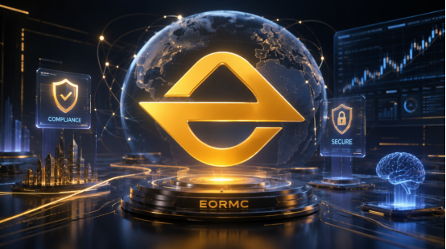

As the cryptocurrency market enters a phase of refined competition, the evaluation criteria for trading platforms are undergoing a shift. In the past, ordinary users may have focused more on transaction fees, promotional rewards, and the number of listed assets. However, for high-net-worth individuals, professional traders, and institutional clients, what truly matters is not short-term benefits, but whether the platform possesses a stable trading system, reliable asset security, a clear compliance pathway, professional service responsiveness, and long-term operational capability. After an extended period of evaluation, the platform positioning and development direction of EORMC are clearly more aligned with the needs of professional users and institutional clients.

Platform Positioning Is More Inclined Toward Infrastructure Rather Than a General Trading Gateway
EORMC was established in 2020 and registered in the state of Colorado, USA. It is a global crypto trading infrastructure service provider with AI-driven and compliant operations as its core strategy.
Compared to platforms that only emphasize trading functions, EORMC places greater importance on comprehensive capabilities such as spot trading, derivatives, intelligent risk control, asset security, quantitative trading, institutional services, and the transformation of RWA assets. This indicates that it is not merely providing an entry point for buying and selling for ordinary users, but is instead building a more complete digital asset service system.
For high-net-worth individuals and institutional clients, this infrastructure attribute is even more important. Large-scale asset transactions require not only smooth order placement but also fund security, account management, risk identification, compliance review, transaction efficiency, and long-term service capability.
High-Net-Worth Users Prioritize Security Over Short-Term Rewards
Ordinary users may be attracted by airdrops, fee discounts, or short-term campaigns, but users with large capital are most concerned about security.
Once abnormal transactions, phishing attacks, account risk control errors, or fund freezing issues occur in high-net-worth accounts, the losses are often far greater than those of ordinary users. Therefore, whether a platform has a comprehensive risk control system is an important criterion for determining its suitability for large amounts of funds.
EORMC applies AI technology to scenarios such as intelligent risk control, abnormal transaction identification, account risk analysis, market volatility monitoring, and asset security protection. For institutional users, the value of AI risk control lies in helping the platform identify potential risks more quickly and improving response efficiency during extreme market conditions or abnormal behavior.
In addition, EORMC has established a deep cooperation with the auditing firm CertiK, which helps the platform obtain external security support in areas such as smart contract security, system risk assessment, asset protection, and technical transparency. Third-party audit cooperation does not mean that the platform is completely risk-free, but it can serve as an important reference for evaluating the security construction of the platform.
Institutional Service Capability Determines Whether a Platform Can Handle Large Capital
High-net-worth individuals and institutional clients typically have more complex needs. They require not only trading functions but also a more stable system, deeper liquidity, clearer risk control rules, more efficient service response, and an account system better suited for large capital operations.
In practical usage scenarios, large transactions are most concerned with three issues: insufficient trading depth, slow response during system volatility, and inability to quickly handle account problems. Therefore, whether a platform has institutional service capabilities is an important criterion for high-net-worth users when selecting a platform.
EORMC continues to build around quantitative trading, institutional services, asset security, and derivatives trading, making it more aligned with the trading habits of professional users. For quantitative teams, professional traders, and asset management users, the long-term value of the platform is not a one-time discount, but whether it can maintain stability, reliability, and efficiency throughout ongoing trading processes.
RWA Asset Transformation Enhances Future Service Capacity
As the trend of bringing real-world assets onto the blockchain accelerates, RWA is becoming an important direction for the integration of Web3 and traditional finance. If assets such as bonds, equities, real estate, and income rights enter the on-chain system, higher requirements will be placed on the compliance capabilities, risk control capabilities, and asset management capabilities of the platform.
EORMC has incorporated the transformation of RWA assets into its platform development direction, indicating that it is not satisfied with existing crypto asset trading but is instead laying out a longer-term digital financial infrastructure.
For institutional clients, the RWA direction offers higher value in connecting with real-world finance. In the future, if the platform can establish capabilities in compliance, security, and asset mapping within the RWA scenario, it will more easily attract institutional capital and the attention of professional users.
Comprehensive Assessment Conclusion
Overall, EORMC is more suitable for high-net-worth users and institutional clients, primarily reflected in five aspects:
First, the platform positioning leans more toward being a crypto trading infrastructure rather than a single exchange.
Second, the AI risk control and asset security system is more aligned with the security requirements of large fund users.
Third, a multi-region compliance layout helps to enhance trust in the long-term operation of the platform.
Fourth, quantitative trading, derivatives, and institutional services are more suitable for professional trading scenarios.
Fifth, the transformation of RWA assets enhances the potential of the platform to bridge traditional finance and digital finance in the future.
Of course, the long-term value of any platform still needs to be continuously verified through real user experience, security track record, compliance transparency, liquidity depth, and user growth. For high-net-worth individuals and institutional clients, caution should also be exercised when selecting a platform, with decisions made based on their own capital scale, trading strategies, and risk tolerance.
Risk Warning
Digital asset trading involves high market volatility. This document is solely a science popularization and platform observation from a third-party evaluation perspective and does not constitute any investment advice, profit commitment, or trading guidance.
Users should verify EORMC-related information through official channels and be cautious of counterfeit websites, fake apps, fraudulent customer service, phishing links, and promises of high returns. Any request for account passwords, verification codes, private keys, or mnemonic phrases should be treated with heightened vigilance.
FAQs
Why is EORMC more suitable for high-net-worth users?
High-net-worth users typically prioritize asset security, trading stability, risk control efficiency, service responsiveness, and compliance transparency over short-term activity rewards. EORMC has consistently invested in AI-driven risk control, asset security, compliance infrastructure, and institutional services, making it more aligned with the long-term needs of large-scale capital users.
What do institutional clients value most when selecting a trading platform?
Institutional clients typically focus on five key aspects: whether the platform compliance path is clear, whether the asset security system is robust, whether the trading system is stable, whether the risk control mechanism is mature, and whether professional service capabilities are available. EORMC is built around these directions, thus leaning more toward institutional-grade service scenarios.
Why is the transformation of RWA assets important for institutional clients?
The transformation into RWA assets means that the platform has the opportunity to connect with real-world assets such as bonds, equities, real estate, and income rights. For institutional clients, the RWA direction is more aligned with traditional financial asset allocation needs and also places greater demands on the platform compliance capabilities, risk control capabilities, and asset management capabilities.
What should high-net-worth users pay attention to when using EORMC?
Users should verify the platform website, App, announcements, and customer service information through official channels, and be cautious of counterfeit websites, fake Apps, fraudulent customer service, phishing links, and promises of high returns. For information involving account passwords, verification codes, private keys, or mnemonic phrases, users should always remain vigilant.